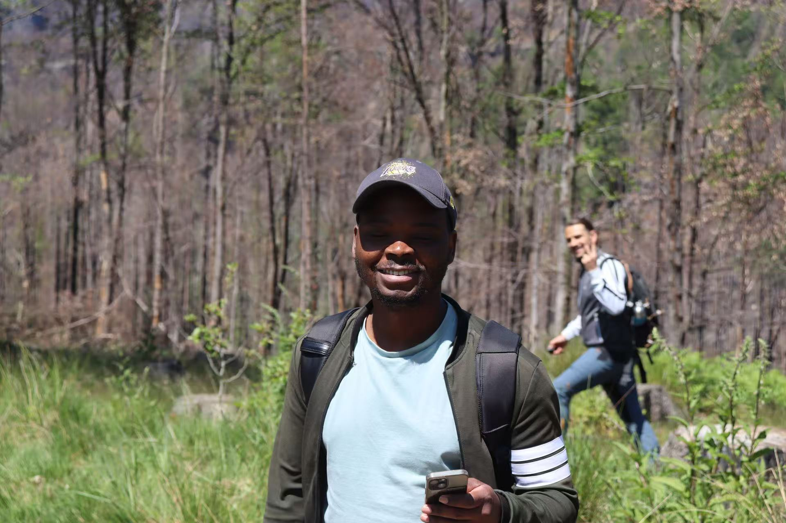
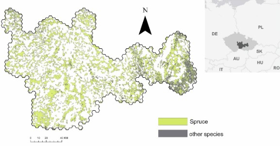
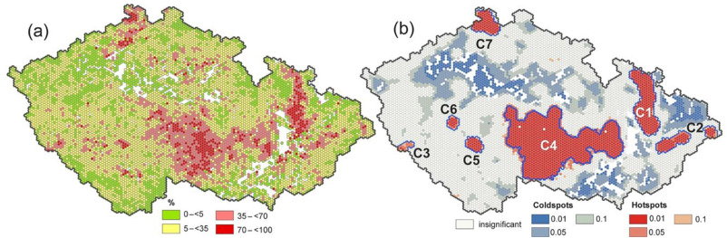
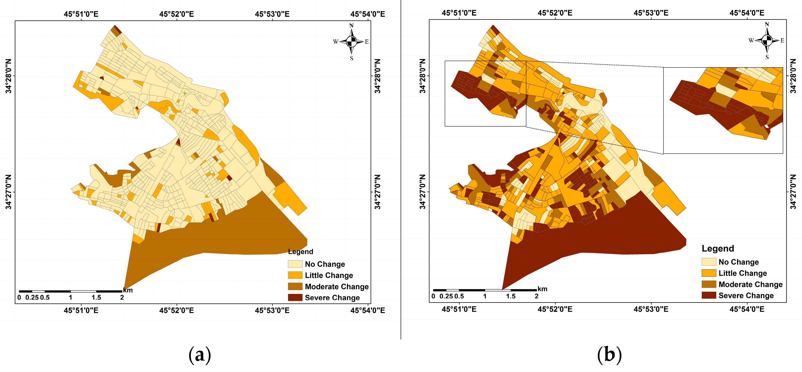
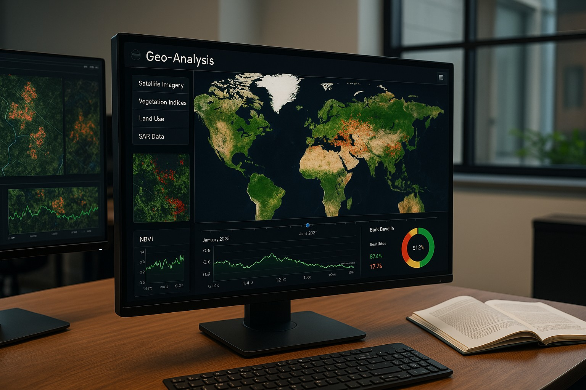
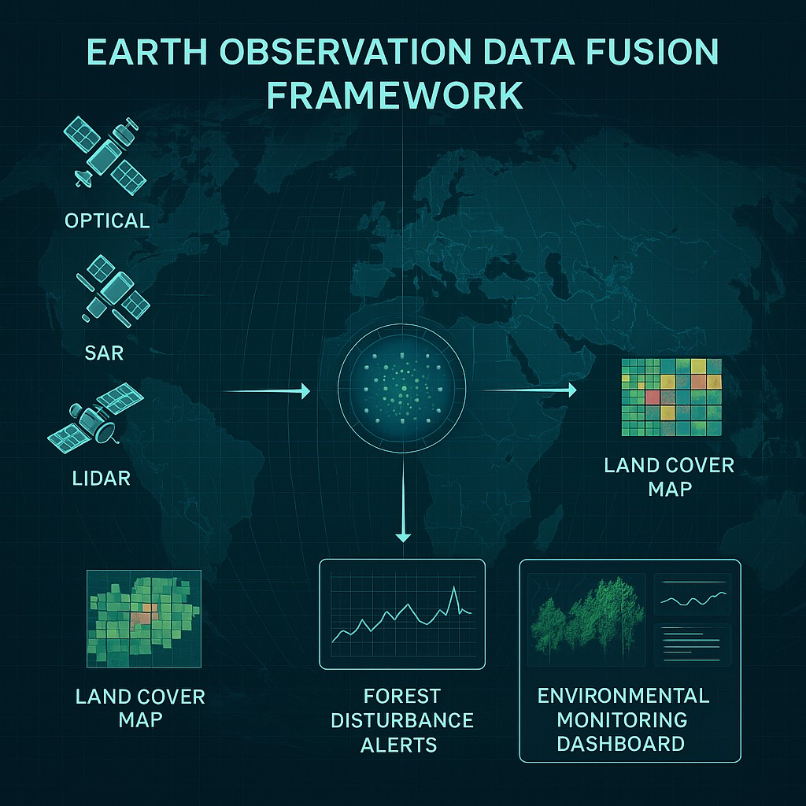

MSc.
I'm a PhD student who looks at pictures of Earth taken from space (you know, those cool satellite shots). I use them to check out what's happening with our forests and the climate—like whether trees are disappearing or the weather's getting wilder. I've got some neat tools and a bunch of info to play with, and my trick is turning all that nerdy stuff into something you'd actually enjoy hearing about. No complicated science degree or nap required—I promise it'll make sense and keep you awake!
Current Research: My work centers on understanding forest disturbances, such as insect outbreaks, by integrating satellite imagery with ground-based data. This fusion helps reveal critical patterns and their implications for ecosystem resilience—a bit like detective work, powered by cutting-edge technology.
My Passion: I'm driven by the challenge of transforming complex geospatial data into clear, actionable insights. Whether through research, teaching, or developing tools, I strive to make science not only accessible but also impactful, bridging the gap between technical findings and real-world applications.
My Background and Approach: With experience spanning property management to advanced radar data analysis, I bring a diverse perspective to my work. I value precision but never lose sight of the broader context. My approach is rooted in curiosity, practicality, and a commitment to quality—often with a nod to Python for bringing ideas to life.
Future Goals: Looking ahead, I'm focused on advancing research and tools that support sustainable decision-making. My aim is to leverage geospatial insights to address pressing environmental challenges, ensuring science serves society effectively.
That's me in a nutshell—professional, purpose-driven, and always ready to connect over a shared interest in technology, ecosystems, or the view from space.
Download Resume
Applied Geoinformatics and Remote Sensing. Thesis title: Forest disturbance mapping by integrating heterogeneous remote sensing and ground data
Processed and analyzed Synthetic Aperture Radar (SAR) data to monitor surface deformation, generating detailed reports to support decision-making and risk assessment. Conducted optical data analysis for agricultural monitoring, identifying trends in crop health and land use to inform sustainable practices. Leveraged advanced geospatial tools and techniques to deliver accurate, actionable insights for diverse stakeholders.
Photogrammetry and Remote Sensing.Thesis title: SAR Coherence Change Detection in Urban Areas affected by disasters.
TBD
The study uses optical and SAR remote sensing, to post-2018 bark beetle disturbance and recovery across a 9,000 km² Central European landscape, revealing 32% forest loss, persistent bare soil, and complex regeneration dynamics with a XX% net annual recovery rate by 2024.
DOI: TBA
Figure 1: Spatial distribution of forest recovery rates across the study area (2018-2024).
Forest Ecosystems
The study maps the 2016–2022 spruce bark beetle outbreak in the Czech Republic using optical and SAR satellite imagery, revealing seven major outbreak foci, a 38% forest cover loss across 9,000 km², and shifting disturbance dynamics from new mortality spots to short-range expansion, with significant forest fragmentation by 2022.
DOI: https://doi.org/10.1016/j.fecs.2024.100243
Figure 2: Spatial and temporal dynamics of bark beetle outbreak in Czech Republic (2016-2022).
Remote Sensing
This study leverages weather-independent Sentinel-1 SAR data and Coherence Change-Detection to monitor disaster impacts across Syria, Puerto Rico, California, and Iran, revealing significant coherence loss and building damage in street blocks post-disaster, with high standard deviation indicating localized effects.
DOI: https://doi.org/10.3390/rs10071026
Figure 3: SAR coherence change detection showing urban damage patterns following disaster events.
A Python-based toolset for automatically detecting and classifying forest disturbances using multi-temporal satellite imagery. Incorporates machine learning models for improved accuracy.

Web-based platform for processing and analyzing SAR coherence data for disaster monitoring and environmental change detection. Includes visualization tools and automated reporting.

A comprehensive framework for integrating data from multiple satellite sensors for enhanced environmental monitoring. Leverages Google Earth Engine for scalable processing.
My research interest in forests naturally extends to personal enjoyment of hiking and nature photography. These activities provide fresh perspectives and inspiration for my scientific work.
Beyond professional applications, I enjoy coding personal projects and contributing to open-source tools. This creative outlet helps me develop new skills while solving interesting problems.
I'm an avid reader of both scientific literature and non-fiction, particularly books on environmental topics, technology trends, and cultural perspectives that inform my interdisciplinary approach.
After developing proficiency in Mandarin during my time in China, I've continued exploring new languages as a way to understand different cultures and communication patterns.
pwashaya9@gmail.com
+420607459658
Prague, Czech Republic